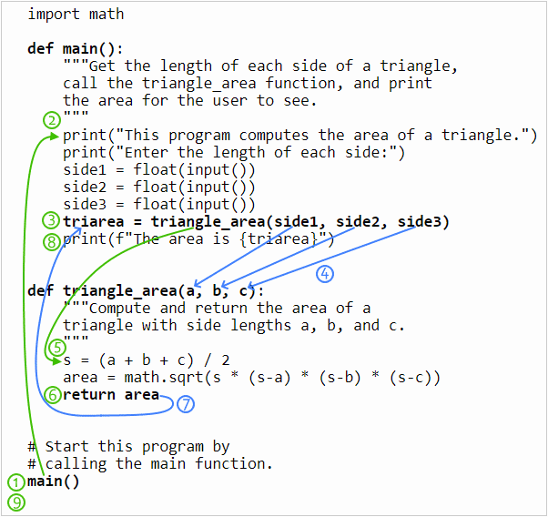

05 Prepare: Writing Functions
Because most useful computer programs are very large, programmers divide their programs into parts. Dividing a program into parts makes it easier to write, debug, and understand the program. A programmer can divide a Python program into modules, classes, and functions. In this unit, you will learn how to write your own functions.
Concepts
Here are the Python programming concepts and topics that you should learn during this lesson:
- A function is a group of statements (computer commands) that together perform one task.
- A programmer (you) can save lots of time by writing and calling your own functions.
- To write a function in Python, simply type code that matches this template:
def function_name(param1, param2, … paramN): statement1 statement2 ⋮ statementN return value - The first line of a function is called the header or signature, and it includes the following:
- the keyword
def - the function name
- the parameter list
draw_circlethat takes three parameters namedx,y, andradius:def draw_circle(x, y, radius):
- The function name must start with a letter or the underscore (_). The rest of the name must be made of letters, digits (0–9), or the underscore. A function name cannot include spaces or other punctuation. A function name should be meaningful and should describe curtly what the function does.
- The parameter list contains data stored in variables that the function needs to complete its task. A parameter is a variable whose value comes from outside the function. One way to get input into a function is to ask the user for input by calling the built-in Python
inputfunction. Another way to get input into a function is through the function's parameters. Getting input through parameters is much more flexible than asking the user for input because the input through parameters can come from the user or a file on a hard drive or the network or a sensor or even another function. The statements inside a function are called the body of the function. A function may contain as many statements as you wish to write inside of it. However, it is a good idea to limit functions to less than a page (60 lines) long. To return a result from a function so that the result can be used somewhere else in your program, simply type the keyword
returnfollowed by whatever value you want returned to the calling function.Here is a function (both the header and body) that computes and returns the average of three numbers:
def average(a, b, c): """Computes and returns the average of three numbers.""" total = a + b + c avg = total / 3 return avgHere is a function that takes two parameters named a and r and computes and returns the value of this equation: f (a,r ) = a × (1 + r ).
def formula(a, r): """Computes and returns the value of a * (1 + r)""" result = a * (1 + r) return result- In all previous Python programs that you wrote in CSE 110 and 111, you wrote statements that were not in a function like this simple program:
# Get a value in miles and convert it to kilometers. miles = float(input("Please enter a distance in miles: ")) km = miles * 1.60934 print(f"{miles} miles is {km} kilometers")However, writing statements outside of a function can lead to poor organization within a large program. Professional software developers write statements inside a function whenever possible. Beginning with this lesson, we will write nearly all statements inside a function. Also, each program will have a function named
mainwhich will contain the beginning statements of the program. In addition, we will have one or more functions that perform calculations and other useful work and return a value to the call point. For example:A computer will execute the statements in the previous example in this order:
- The statement at (1) is not inside of a function, so the computer executes it when the program begins. This is a call to the
mainfunction which causes the computer to begin executing the statements inside ofmainat (2). - The computer gets three numbers from the user.
- The statement at (3) is a call to the
triangle_areafunction. - The computer copies the values in the arguments side1, side2, and side3 into the parameters a, b, and c, respectively and then begins executing the statements inside the
triangle_areafunction at (5). - The computer computes the area of a triangle.
- The statement at (6) is a return statement which causes the computer to stop executing the
triangle_areafunction, to return a value to the call point at (3), and to resume executing statements at (8) after the call point. - The computer returns the value in the area variable to the call point (3). At the call point, the returned value is stored in the triarea variable.
- The computer prints the value that is in the triarea variable for the user to see. This is the last statement in the
mainfunction, so after executing it, the computer resumes executing the statements after the call point (1) to main. - There are no more statements after the call to
main, so the program is finished.
- The most reusable functions are ones that take parameters, perform calculations, and return a value but do not perform user input and output. In the previous code example, there are two functions:
mainandtriangle_area. Themainfunction is certainly useful in this program, but it is not reusable in other programs because it gets user input and prints the result for the user to see. Thetriangle_areafunction is very reusable in another program because it doesn't get user input or print output. Instead it takes three parameters, performs a calculation, and returns a result to the calling function. This second function is so reusable that it could be included in a library of functions that compute the area and volume of 2-D and 3-D geometric shapes.
Videos
Watch the following videos from Microsoft about writing functions:
It is extremely important that you can write and call functions. After watching the above videos, if the concepts related to writing a function still seem confusing or vague to you, read the list of concepts (above the videos) again and then watch the videos again.